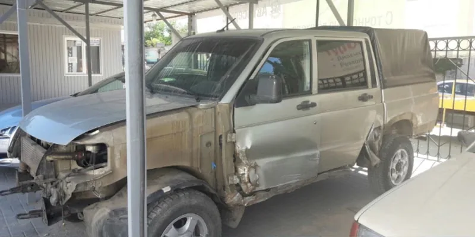

Кузовной цех · Полоненко, 15Б
Кузовной ремонт после ДТП в Волгограде
Свой кузовной цех в Дзержинском районе с 2009 года. Ремонт и покраска, удаление вмятин без покраски. Скажем, сколько будет стоить, по фото — до поездки в сервис.
Оценка по фото предварительная: точную сумму назовём после осмотра. Нет Telegram? Позвоните: 8-937-085-48-88.
- Работаем с 2009 года
- 4,8 · 249 отзывов · Яндекс Карты, 16.11.2026
- Цех пн–пт 9:00–18:00


Что прислать, чтобы назвать цену
Три-четыре фото и одно сообщение. Этого хватает, чтобы назвать диапазон и не гонять вас на осмотр вслепую.
- Повреждение целикомС расстояния 1–2 метра, чтобы было видно деталь и соседние.
- То же место крупноВмятина, скол, царапина — как есть, без подготовки.
- Вторая сторона или соседняя детальЕсли задета — чтобы не оказалось «а ещё вот тут».
- Модель, год и что случилось одной строкой«парковка», «ДТП», «град» — этого достаточно.
- Направление или выплата от страховойЕсли есть — напишите, от этого зависит порядок.
Отвечаем в рабочее время цеха: пн–пт 9:00–18:00.
Что делает кузовной цех
Ремонт и покраска деталей, покраска бампера, удаление вмятин без покраски. Цены — «от», из прайса сервиса.
- Ремонт и покраска крылаот 16 000 ₽
- Ремонт и покраска двериот 20 000 ₽
- Ремонт и покраска порогаот 18 000 ₽
- Ремонт и покраска капотаот 20 000 ₽
- Ремонт и покраска крышиот 26 000 ₽
- Ремонт и покраска крышки багажникаот 18 000 ₽
- Покраска бампера, установкаот 16 000 ₽
- Удаление вмятины без покраскиот 2 000 ₽
Ориентировочные цены. Точную стоимость назовём после осмотра. Вмятины — без учёта демонтажа деталей.
Порядок: фото → цена → осмотр → сумма
- Фото в TelegramПрисылаете, что есть, без подготовки.
- ЦенаНазываем по фото, в рабочее время цеха.
- ОсмотрСмотрим деталь, крепёж и скрытые повреждения. Это единственный способ увидеть, что под бампером.
- Сумма до работОбъём и стоимость согласуем до начала. Дополнительные работы — только после вашего «да».
Если платит страховая
Если страховая выплатила деньгами — сделаем ремонт у нас за эту сумму. Если пришло направление на ремонт — пришлите его фото в Telegram, уточним.
Работаем по договору: условия и гарантия в нём. Гарантия на кузовной ремонт и покраску — по договору, а не «пожизненная».
Почему сюда
- Свой кузовной цех с 2009 года на одном адресе — не подряд и не «между делом»
- У цеха свой график: пн–пт 9:00–18:00, слесарный работает ежедневно 8:00–20:00
- Сумму согласуем до работ, доп. работы — только с вашего согласия
Что спрашивают до осмотра
Сколько займёт ремонт?
Зависит от деталей и загрузки цеха. Скажем после осмотра, до начала работ: обещать срок по фото — обманывать.
Оценка по фото — это точная сумма?
Нет. Это предварительная цена, чтобы вы понимали порядок. Точная сумма — после осмотра, до работ.
Можно приехать со своими запчастями?
Да. Гарантия в этом случае только на работу.
Красите целиком или локально?
Зависит от повреждения: локальный ремонт возможен не всегда. Скажем после осмотра.
Как оплатить?
Картой, наличными, через банк или по QR-коду.
Работаете в субботу?
Кузовной цех — пн–пт 9:00–18:00. Слесарный — ежедневно 8:00–20:00.
Пришлите фото — назовём цену
Это быстрее, чем ехать на осмотр вслепую. Фото можно сделать прямо сейчас, стоя у машины.
- Адрес
- Волгоград, ул. Полоненко, 15БДзержинский район, пос. Ангарский
- Цех
- Пн–пт 9:00–18:00Слесарный — ежедневно 8:00–20:00
- Телефон
- 8-937-085-48-88Telegram: @abs_auto34_bot
- Маршрут
- Открыть в Яндекс Картах